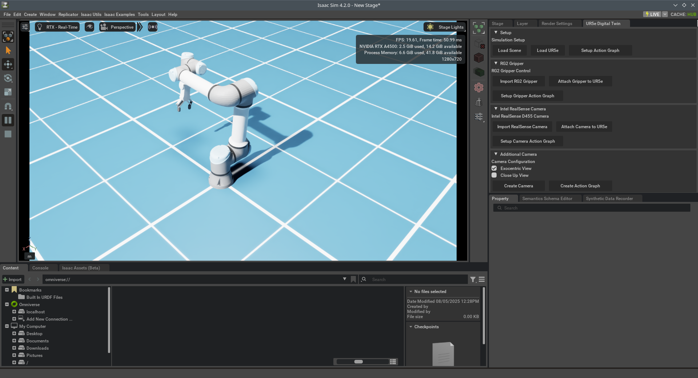

UR5e + RG2 Gripper Setup (Sim + Real World)¶
This tutorial walks you through setting up the UR5e robot with an RG2 gripper for both Isaac Sim (4.2 and 4.5) and a physical robot, including control, ROS 2 integration, and URSim.
Part 1: Setup Extension in Isaac Sim¶
Clone the Extension¶
Add Extension Path in Isaac Sim Settings¶
For Isaac Sim 4.2:
For Isaac Sim 4.5:
Extension

=== "Isaac Sim 4.2"
import omni.ext
import omni.ui as ui
import asyncio
import numpy as np
import os
import rclpy
from rclpy.node import Node
from std_msgs.msg import String
import threading
from omni.isaac.core.world import World
from omni.isaac.core.utils.stage import add_reference_to_stage
from omni.isaac.core.articulations import ArticulationView
from omni.isaac.nucleus import get_assets_root_path
from omni.isaac.motion_generation import LulaKinematicsSolver, ArticulationKinematicsSolver
from omni.isaac.core.utils.numpy.rotations import euler_angles_to_quats
from omni.isaac.core.articulations import Articulation
import omni.graph.core as og
import omni.usd
from pxr import UsdGeom, Gf
class DigitalTwin(omni.ext.IExt):
def on_startup(self, ext_id):
print("[DigitalTwin] Digital Twin startup")
self._timeline = omni.timeline.get_timeline_interface()
self._ur5e_view = None
self._articulation = None
self._gripper_view = None
# Initialize ROS2 only once
try:
if not rclpy.ok():
rclpy.init()
print("ROS2 initialized successfully")
except Exception as e:
print(f"Failed to initialize ROS2: {e}")
# Create the window UI
self._window = ui.Window("UR5e Digital Twin", width=300, height=800) # Increased height
with self._window.frame:
with ui.VStack(spacing=5):
self.create_ui()
def create_ui(self):
with ui.VStack(spacing=5):
with ui.CollapsableFrame(title="Setup", collapsed=False, height=0):
with ui.VStack(spacing=5, height=0):
ui.Label("Simulation Setup", alignment=ui.Alignment.LEFT)
with ui.HStack(spacing=5):
ui.Button("Load Scene", width=100, height=35, clicked_fn=lambda: asyncio.ensure_future(self.load_scene()))
ui.Button("Load UR5e", width=100, height=35, clicked_fn=lambda: asyncio.ensure_future(self.load_ur5e()))
ui.Button("Setup Action Graph", width=180, height=35, clicked_fn=lambda: asyncio.ensure_future(self.setup_action_graph()))
with ui.CollapsableFrame(title="RG2 Gripper", collapsed=False, height=0):
with ui.VStack(spacing=5, height=0):
ui.Label("RG2 Gripper Control", alignment=ui.Alignment.LEFT)
with ui.HStack(spacing=5):
ui.Button("Import RG2 Gripper", width=150, height=35, clicked_fn=self.import_rg2_gripper)
ui.Button("Attach Gripper to UR5e", width=180, height=35, clicked_fn=self.attach_rg2_to_ur5e)
with ui.HStack(spacing=5):
ui.Button("Setup Gripper Action Graph", width=200, height=35, clicked_fn=self.setup_gripper_action_graph)
# Intel RealSense Camera
with ui.CollapsableFrame(title="Intel RealSense Camera", collapsed=False, height=0):
with ui.VStack(spacing=5, height=0):
ui.Label("Intel RealSense D455 Camera", alignment=ui.Alignment.LEFT)
with ui.HStack(spacing=5):
ui.Button("Import RealSense Camera", width=170, height=35, clicked_fn=self.import_realsense_camera)
ui.Button("Attach Camera to UR5e", width=160, height=35, clicked_fn=self.attach_camera_to_ur5e)
with ui.HStack(spacing=5):
ui.Button("Setup Camera Action Graph", width=200, height=35, clicked_fn=self.setup_camera_action_graph)
# NEW SECTION: Additional Camera
with ui.CollapsableFrame(title="Additional Camera", collapsed=False, height=0):
with ui.VStack(spacing=5, height=0):
ui.Label("Camera Configuration", alignment=ui.Alignment.LEFT)
# Camera type selection with checkboxes and labels
with ui.VStack(spacing=5):
with ui.HStack(spacing=5):
self._exocentric_checkbox = ui.CheckBox(width=20)
self._exocentric_checkbox.model.set_value(True) # Default checked
ui.Label("Exocentric View", alignment=ui.Alignment.LEFT, width=120)
with ui.HStack(spacing=5):
self._custom_checkbox = ui.CheckBox(width=20)
ui.Label("Close Up View", alignment=ui.Alignment.LEFT, width=120)
# Camera control buttons
with ui.HStack(spacing=5):
ui.Button("Create Camera", width=150, height=35, clicked_fn=self.create_additional_camera)
ui.Button("Create Action Graph", width=180, height=35, clicked_fn=self.create_additional_camera_actiongraph)
async def load_scene(self):
world = World()
await world.initialize_simulation_context_async()
world.scene.add_default_ground_plane()
print("Scene loaded successfully.")
async def load_ur5e(self):
asset_path = "omniverse://localhost/Library/ur5e.usd"
prim_path = "/World/UR5e"
# 1. Add the USD asset
add_reference_to_stage(usd_path=asset_path, prim_path=prim_path)
# 2. Wait for prim to exist
import time
stage = omni.usd.get_context().get_stage()
for _ in range(10):
prim = stage.GetPrimAtPath(prim_path)
if prim.IsValid():
break
time.sleep(0.1)
else:
raise RuntimeError(f"Failed to load prim at {prim_path}")
# 3. Apply translation and orientation
xform = UsdGeom.Xform(prim)
xform.ClearXformOpOrder()
# Custom position and orientation
position = Gf.Vec3d(0.0, 0.0, 0.0) # Replace with your desired position
rpy_deg = np.array([0.0, 0.0, 180.0]) # Replace with your desired RPY
rpy_rad = np.deg2rad(rpy_deg)
quat_xyzw = euler_angles_to_quats(rpy_rad)
quat = Gf.Quatd(quat_xyzw[0], quat_xyzw[1], quat_xyzw[2], quat_xyzw[3])
xform.AddTranslateOp().Set(position)
xform.AddOrientOp(UsdGeom.XformOp.PrecisionDouble).Set(quat)
print(f"Applied translation and rotation to {prim_path}")
# 4. Setup Articulation
self._ur5e_view = ArticulationView(prim_paths_expr=prim_path, name="ur5e_view")
World.instance().scene.add(self._ur5e_view)
await World.instance().reset_async()
self._timeline.stop()
self._articulation = Articulation(prim_path)
print("UR5e robot loaded successfully!")
async def setup_action_graph(self):
import omni.graph.core as og
import omni.isaac.core.utils.stage as stage_utils
from omni.isaac.core.utils.extensions import enable_extension
print("Setting up ROS 2 Action Graph...")
# Ensure extensions are enabled
enable_extension("omni.isaac.ros2_bridge")
enable_extension("omni.isaac.core_nodes")
enable_extension("omni.graph.action")
graph_path = "/ActionGraph"
(graph, nodes, _, _) = og.Controller.edit(
{
"graph_path": graph_path,
"evaluator_name": "execution"
},
{
og.Controller.Keys.CREATE_NODES: [
("on_playback_tick", "omni.graph.action.OnPlaybackTick"),
("ros2_context", "omni.isaac.ros2_bridge.ROS2Context"),
("isaac_read_simulation_time", "omni.isaac.core_nodes.IsaacReadSimulationTime"),
("ros2_subscribe_joint_state", "omni.isaac.ros2_bridge.ROS2SubscribeJointState"),
("ros2_publish_clock", "omni.isaac.ros2_bridge.ROS2PublishClock"),
("articulation_controller", "omni.isaac.core_nodes.IsaacArticulationController"),
],
og.Controller.Keys.SET_VALUES: [
("ros2_context.inputs:useDomainIDEnvVar", True),
("ros2_context.inputs:domain_id", 0),
("ros2_subscribe_joint_state.inputs:topicName", "/joint_states"),
("ros2_subscribe_joint_state.inputs:nodeNamespace", ""),
("ros2_subscribe_joint_state.inputs:queueSize", 10),
("ros2_publish_clock.inputs:topicName", "/clock"),
("ros2_publish_clock.inputs:nodeNamespace", ""),
("ros2_publish_clock.inputs:qosProfile", "SYSTEM_DEFAULT"),
("ros2_publish_clock.inputs:queueSize", 10),
("isaac_read_simulation_time.inputs:resetOnStop", True),
("articulation_controller.inputs:robotPath", "/World/UR5e"),
],
og.Controller.Keys.CONNECT: [
("on_playback_tick.outputs:tick", "ros2_subscribe_joint_state.inputs:execIn"),
("on_playback_tick.outputs:tick", "ros2_publish_clock.inputs:execIn"),
("on_playback_tick.outputs:tick", "articulation_controller.inputs:execIn"),
("ros2_context.outputs:context", "ros2_subscribe_joint_state.inputs:context"),
("ros2_context.outputs:context", "ros2_publish_clock.inputs:context"),
("isaac_read_simulation_time.outputs:simulationTime", "ros2_publish_clock.inputs:timeStamp"),
("ros2_subscribe_joint_state.outputs:positionCommand", "articulation_controller.inputs:positionCommand"),
("ros2_subscribe_joint_state.outputs:velocityCommand", "articulation_controller.inputs:velocityCommand"),
("ros2_subscribe_joint_state.outputs:effortCommand", "articulation_controller.inputs:effortCommand"),
("ros2_subscribe_joint_state.outputs:jointNames", "articulation_controller.inputs:jointNames"),
],
}
)
print("ROS 2 Action Graph setup complete.")
def setup_gripper_action_graph(self):
"""Setup gripper action graph for ROS2 control"""
print("Setting up Gripper Action Graph...")
graph_path = "/World/ActionGraph"
# Delete existing
stage = omni.usd.get_context().get_stage()
if stage.GetPrimAtPath(graph_path):
stage.RemovePrim(graph_path)
keys = og.Controller.Keys
print("Creating nodes...")
# Create only the essential nodes
(graph, nodes, _, _) = og.Controller.edit(
{"graph_path": graph_path, "evaluator_name": "execution"},
{
keys.CREATE_NODES: [
(f"{graph_path}/tick", "omni.graph.action.OnPlaybackTick"),
(f"{graph_path}/context", "omni.isaac.ros2_bridge.ROS2Context"),
(f"{graph_path}/subscriber", "omni.isaac.ros2_bridge.ROS2Subscriber"),
(f"{graph_path}/script", "omni.graph.scriptnode.ScriptNode")
]
}
)
print("Adding script attributes...")
# Add script attributes
script_node = og.Controller.node(f"{graph_path}/script")
og.Controller.create_attribute(script_node, "inputs:String", og.Type(og.BaseDataType.TOKEN))
og.Controller.create_attribute(script_node, "outputs:Integer", og.Type(og.BaseDataType.INT))
print("Setting values...")
# Set values with try/catch for each one
def safe_set(path, value, desc=""):
try:
attr = og.Controller.attribute(path)
if attr.is_valid():
og.Controller.set(attr, value)
print(f"Set {desc}")
return True
else:
print(f"Invalid: {desc}")
return False
except Exception as e:
print(f"Failed {desc}: {e}")
return False
# Configure ROS2 Subscriber
safe_set(f"{graph_path}/subscriber.inputs:messageName", "String", "ROS2 message type")
safe_set(f"{graph_path}/subscriber.inputs:messagePackage", "std_msgs", "ROS2 package")
safe_set(f"{graph_path}/subscriber.inputs:topicName", "gripper_command", "ROS2 topic")
# Configure Script Node
safe_set(f"{graph_path}/script.inputs:usePath", False, "Use inline script")
# Script that handles string processing internally
script_content = '''from omni.isaac.core.articulations import ArticulationView
from omni.isaac.core.utils.types import ArticulationActions
import numpy as np
import omni.timeline
gripper_view = None
last_sim_frame = -1
def setup(db):
global gripper_view
try:
# Always create a fresh gripper view in setup
gripper_view = ArticulationView(prim_paths_expr="/RG2_Gripper", name="gripper")
gripper_view.initialize()
db.log_info("Gripper initialized successfully")
except Exception as e:
db.log_error(f"Gripper setup failed: {e}")
gripper_view = None
def compute(db):
global gripper_view, last_sim_frame
try:
# Get input string from ROS2
input_str = str(db.inputs.String).strip()
# Handle string replacements in Python
if input_str == "open":
processed_str = "1100"
elif input_str == "close":
processed_str = "0"
else:
processed_str = input_str
# Convert to width in mm
try:
width_mm = float(processed_str) / 10.0
except ValueError:
db.log_error(f"Invalid input: {input_str}")
return
# Check if simulation restarted by monitoring frame count
timeline = omni.timeline.get_timeline_interface()
current_frame = timeline.get_current_time() * timeline.get_time_codes_per_seconds()
# If frame went backwards, simulation was restarted
if current_frame < last_sim_frame or last_sim_frame == -1:
db.log_info("Simulation restart detected, reinitializing gripper...")
try:
gripper_view = ArticulationView(prim_paths_expr="/RG2_Gripper", name="gripper")
gripper_view.initialize()
db.log_info("Gripper reinitialized after restart")
except Exception as e:
db.log_error(f"Gripper reinitialization failed: {e}")
gripper_view = None
last_sim_frame = current_frame
# Check if gripper is available
if gripper_view is None:
db.log_warning("Gripper not available")
return
# Check if simulation is running
if timeline.is_stopped():
return
# Try to apply action, with graceful handling of physics not ready
try:
# Clamp to valid range
width_mm = np.clip(width_mm, 0.0, 110.0)
# Map width to joint angle: 0mm = -π/4 (closed), 110mm = π/6 (open)
ratio = width_mm / 110.0
joint_angle = -np.pi/4 + ratio * (np.pi/4 + np.pi/6)
# Apply to gripper
target_positions = np.array([joint_angle, joint_angle])
action = ArticulationActions(
joint_positions=target_positions,
joint_indices=np.array([0, 1])
)
gripper_view.apply_action(action)
# Set output
db.outputs.Integer = int(width_mm)
db.log_info(f"Gripper: \\'{input_str}\\' -> {width_mm:.1f}mm -> {joint_angle:.3f}rad")
except Exception as e:
# This is expected during the first few frames after restart
if "Physics Simulation View is not created yet" in str(e):
# Physics not ready yet, just wait
db.outputs.Integer = int(np.clip(width_mm, 0.0, 110.0))
else:
db.log_warning(f"Action failed: {e}")
db.outputs.Integer = 0
except Exception as e:
db.log_error(f"Compute error: {e}")
db.outputs.Integer = 0
def cleanup(db):
global gripper_view
db.log_info("Cleaning up gripper")
gripper_view = None'''
safe_set(f"{graph_path}/script.inputs:script", script_content, "Python script")
print("Creating connections...")
# Simple connections - direct from ROS2 to script
connections = [
(f"{graph_path}/tick.outputs:tick", f"{graph_path}/subscriber.inputs:execIn", "Tick to subscriber"),
(f"{graph_path}/context.outputs:context", f"{graph_path}/subscriber.inputs:context", "Context to subscriber"),
(f"{graph_path}/subscriber.outputs:data", f"{graph_path}/script.inputs:String", "ROS2 data to script"),
(f"{graph_path}/subscriber.outputs:execOut", f"{graph_path}/script.inputs:execIn", "ROS2 exec to script")
]
success_count = 0
for src, dst, desc in connections:
try:
og.Controller.edit(graph, {keys.CONNECT: [(src, dst)]})
print(f"Connected {desc}")
success_count += 1
except Exception as e:
print(f"Failed {desc}: {e}")
print(f"Graph created with {success_count}/4 connections!")
print("Location: /World/ActionGraph")
print("Test commands:")
print("ros2 topic pub /gripper_command std_msgs/String 'data: \"open\"'")
print("ros2 topic pub /gripper_command std_msgs/String 'data: \"close\"'")
print("ros2 topic pub /gripper_command std_msgs/String 'data: \"1100\"'")
print("ros2 topic pub /gripper_command std_msgs/String 'data: \"550\"'")
def import_rg2_gripper(self):
from omni.isaac.core.utils.stage import add_reference_to_stage
rg2_usd_path = "omniverse://localhost/Library/RG2.usd"
add_reference_to_stage(rg2_usd_path, "/RG2_Gripper")
print("RG2 Gripper imported at /RG2_Gripper")
def attach_rg2_to_ur5e(self):
import omni.usd
from pxr import Usd, Sdf, UsdGeom, Gf
import math
stage = omni.usd.get_context().get_stage()
ur5e_gripper_path = "/World/UR5e/Gripper"
rg2_path = "/RG2_Gripper"
joint_path = "/World/UR5e/joints/robot_gripper_joint"
rg2_base_link = "/RG2_Gripper/onrobot_rg2_base_link"
ur5e_prim = stage.GetPrimAtPath(ur5e_gripper_path)
rg2_prim = stage.GetPrimAtPath(rg2_path)
joint_prim = stage.GetPrimAtPath(joint_path)
if not ur5e_prim or not rg2_prim:
print("Error: UR5e or RG2 gripper prim not found.")
return
# Copy transforms from UR5e gripper to RG2
translate_attr = ur5e_prim.GetAttribute("xformOp:translate")
orient_attr = ur5e_prim.GetAttribute("xformOp:orient")
if translate_attr.IsValid() and orient_attr.IsValid():
rg2_prim.CreateAttribute("xformOp:translate", Sdf.ValueTypeNames.Double3).Set(translate_attr.Get())
rg2_prim.CreateAttribute("xformOp:orient", Sdf.ValueTypeNames.Quatd).Set(orient_attr.Get())
print("Setting RG2 gripper orientation with 180° Z offset and rotated position...")
from omni.isaac.core.utils.numpy.rotations import euler_angles_to_quats
import numpy as np
if rg2_prim.IsValid():
# === 1. Apply rotated position ===
original_pos = translate_attr.Get()
x, y, z = original_pos[0], original_pos[1], original_pos[2]
rotated_pos = Gf.Vec3d(-x, -y, z)
# === 2. Apply combined orientation ===
fixed_quat = Gf.Quatd(0.70711, Gf.Vec3d(-0.70711, 0.0, 0.0))
offset_rpy_deg = np.array([0.0, 0.0, 180.0])
offset_rpy_rad = np.deg2rad(offset_rpy_deg)
offset_quat_arr = euler_angles_to_quats(offset_rpy_rad)
offset_quat = Gf.Quatd(offset_quat_arr[0], offset_quat_arr[1], offset_quat_arr[2], offset_quat_arr[3])
final_quat = offset_quat * fixed_quat
# === 3. Apply to prim ===
xform = UsdGeom.Xform(rg2_prim)
xform.ClearXformOpOrder()
xform.AddTranslateOp().Set(rotated_pos)
xform.AddOrientOp(UsdGeom.XformOp.PrecisionDouble).Set(final_quat)
print(f"RG2 position rotated to: {rotated_pos}")
print("RG2 orientation set with fixed+180°Z rotation.")
else:
print(f"Gripper not found at {rg2_path}")
# Create or update the physics joint
if not joint_prim:
joint_prim = stage.DefinePrim(joint_path, "PhysicsFixedJoint")
joint_prim.CreateRelationship("physics:body1").SetTargets([Sdf.Path(rg2_base_link)])
joint_prim.CreateAttribute("physics:jointEnabled", Sdf.ValueTypeNames.Bool).Set(True)
joint_prim.CreateAttribute("physics:excludeFromArticulation", Sdf.ValueTypeNames.Bool).Set(True)
# Set localRot0 and localRot1 for joint
print("Setting joint rotation parameters...")
if joint_prim.IsValid():
def euler_to_quatf(x_deg, y_deg, z_deg):
"""Convert Euler angles (XYZ order, degrees) to Gf.Quatf"""
rx = Gf.Quatf(math.cos(math.radians(x_deg) / 2), Gf.Vec3f(1, 0, 0) * math.sin(math.radians(x_deg) / 2))
ry = Gf.Quatf(math.cos(math.radians(y_deg) / 2), Gf.Vec3f(0, 1, 0) * math.sin(math.radians(y_deg) / 2))
rz = Gf.Quatf(math.cos(math.radians(z_deg) / 2), Gf.Vec3f(0, 0, 1) * math.sin(math.radians(z_deg) / 2))
return rx * ry * rz # Apply in XYZ order
# Set the rotation quaternions for proper joint alignment
quat0 = euler_to_quatf(-90, 0, -90)
quat1 = euler_to_quatf(-180, 90, 0)
joint_prim.CreateAttribute("physics:localRot0", Sdf.ValueTypeNames.Quatf, custom=True).Set(quat0)
joint_prim.CreateAttribute("physics:localRot1", Sdf.ValueTypeNames.Quatf, custom=True).Set(quat1)
print(" Set physics:localRot0 and localRot1 for robot_gripper_joint.")
else:
print(f" Joint not found at {joint_path}")
print("RG2 successfully attached to UR5e with proper orientation and joint configuration.")
def import_realsense_camera(self):
"""Import Intel RealSense D455 camera"""
usd_path = "omniverse://localhost/NVIDIA/Assets/Isaac/4.5/Isaac/Sensors/Intel/RealSense/rsd455.usd"
filename = os.path.splitext(os.path.basename(usd_path))[0]
prim_path = f"/World/{filename}"
add_reference_to_stage(usd_path=usd_path, prim_path=prim_path)
print(f"Prim imported at {prim_path}")
def attach_camera_to_ur5e(self):
"""Attach RealSense camera to UR5e wrist"""
import omni.kit.commands
from pxr import Gf
# Move the prim
omni.kit.commands.execute('MovePrim',
path_from="/World/rsd455",
path_to="/World/UR5e/wrist_3_link/rsd455")
# Set transform properties
omni.kit.commands.execute('ChangeProperty',
prop_path="/World/UR5e/wrist_3_link/rsd455.xformOp:translate",
value=Gf.Vec3d(-0.012, -0.06, -0.01), # fix this
prev=None)
omni.kit.commands.execute('ChangeProperty',
prop_path="/World/UR5e/wrist_3_link/rsd455.xformOp:rotateXYZ",
value=Gf.Vec3d(0, 270, 90),
prev=None)
print("RealSense camera attached to UR5e wrist_3_link")
def setup_camera_action_graph(self):
"""Create ActionGraph for camera ROS2 publishing"""
# Configuration
CAMERA_PRIM = "/World/UR5e/wrist_3_link/rsd455/RSD455/Camera_OmniVision_OV9782_Color"
IMAGE_WIDTH = 640
IMAGE_HEIGHT = 480
ROS2_TOPIC = "intel_camera_rgb"
graph_path = "/World/ActionGraph_Camera" # Different name to avoid conflicts
print(f"Creating ActionGraph: {graph_path}")
print(f"Camera: {CAMERA_PRIM}")
print(f"Resolution: {IMAGE_WIDTH}x{IMAGE_HEIGHT}")
print(f"ROS2 Topic: {ROS2_TOPIC}")
# Create ActionGraph
try:
og.Controller.create_graph(graph_path)
print(f"Created ActionGraph at {graph_path}")
except Exception:
print(f"ActionGraph already exists at {graph_path}")
# Create nodes
nodes = [
("on_playback_tick", "omni.graph.action.OnPlaybackTick"),
("isaac_run_one_simulation_frame", "omni.isaac.core_nodes.OgnIsaacRunOneSimulationFrame"),
("isaac_create_render_product", "omni.isaac.core_nodes.IsaacCreateRenderProduct"),
("ros2_context", "omni.isaac.ros2_bridge.ROS2Context"),
("ros2_camera_helper", "omni.isaac.ros2_bridge.ROS2CameraHelper"),
]
print("\nCreating nodes...")
for node_name, node_type in nodes:
try:
node_path = f"{graph_path}/{node_name}"
og.Controller.create_node(node_path, node_type)
print(f"Created {node_name}")
except Exception as e:
print(f"Node {node_name} already exists")
# Set node attributes
print("\nConfiguring nodes...")
# Configure render product
try:
og.Controller.attribute(f"{graph_path}/isaac_create_render_product.inputs:cameraPrim").set([CAMERA_PRIM])
og.Controller.attribute(f"{graph_path}/isaac_create_render_product.inputs:width").set(IMAGE_WIDTH)
og.Controller.attribute(f"{graph_path}/isaac_create_render_product.inputs:height").set(IMAGE_HEIGHT)
og.Controller.attribute(f"{graph_path}/isaac_create_render_product.inputs:enabled").set(True)
print(f"Configured render product: {CAMERA_PRIM} @ {IMAGE_WIDTH}x{IMAGE_HEIGHT}")
except Exception as e:
print(f"Error configuring render product: {e}")
# Configure ROS2 camera helper
try:
og.Controller.attribute(f"{graph_path}/ros2_camera_helper.inputs:topicName").set(ROS2_TOPIC)
og.Controller.attribute(f"{graph_path}/ros2_camera_helper.inputs:frameId").set("camera_link")
og.Controller.attribute(f"{graph_path}/ros2_camera_helper.inputs:type").set("rgb")
og.Controller.attribute(f"{graph_path}/ros2_camera_helper.inputs:enabled").set(True)
og.Controller.attribute(f"{graph_path}/ros2_camera_helper.inputs:queueSize").set(10)
print(f"Configured ROS2 helper: topic={ROS2_TOPIC}")
except Exception as e:
print(f"Error configuring ROS2 helper: {e}")
# Create connections
print("\nConnecting nodes...")
connections = [
("on_playback_tick.outputs:tick", "isaac_run_one_simulation_frame.inputs:execIn"),
("isaac_run_one_simulation_frame.outputs:step", "isaac_create_render_product.inputs:execIn"),
("isaac_create_render_product.outputs:execOut", "ros2_camera_helper.inputs:execIn"),
("isaac_create_render_product.outputs:renderProductPath", "ros2_camera_helper.inputs:renderProductPath"),
("ros2_context.outputs:context", "ros2_camera_helper.inputs:context"),
]
for source, target in connections:
try:
og.Controller.connect(f"{graph_path}/{source}", f"{graph_path}/{target}")
print(f"Connected {source.split('.')[0]} -> {target.split('.')[0]}")
except Exception as e:
print(f"Failed to connect {source} -> {target}: {e}")
print("\nCamera ActionGraph created successfully!")
print(f"Test with: ros2 topic echo /{ROS2_TOPIC}")
def create_additional_camera(self):
"""Create additional camera based on selected view type"""
import omni.isaac.core.utils.numpy.rotations as rot_utils
from omni.isaac.sensor import Camera
import omni.usd
from pxr import Gf, UsdGeom
import numpy as np
def set_camera_pose(prim_path: str, position_xyz, quat_xyzw):
"""Apply translation and quaternion orientation (x, y, z, w) to a camera prim."""
stage = omni.usd.get_context().get_stage()
prim = stage.GetPrimAtPath(prim_path)
if not prim.IsValid():
raise RuntimeError(f"Camera prim '{prim_path}' not found.")
xform = UsdGeom.Xform(prim)
xform.ClearXformOpOrder()
xform.AddTranslateOp().Set(Gf.Vec3d(*position_xyz))
quat = Gf.Quatd(quat_xyzw[3], quat_xyzw[0], quat_xyzw[1], quat_xyzw[2])
xform.AddOrientOp(UsdGeom.XformOp.PrecisionDouble).Set(quat)
# Check which camera type is selected
is_exocentric = self._exocentric_checkbox.model.get_value_as_bool()
is_custom = self._custom_checkbox.model.get_value_as_bool()
if is_exocentric:
prim_path = "/World/exocentric_camera"
position = (2.3, 3.2, 1.3)
quat_xyzw = (0.19434, 0.57219, 0.75443, 0.25624) # x, y, z, w
camera = Camera(
prim_path=prim_path,
position=np.array(position), # Temporary, actual pose set below
frequency=30,
resolution=(640, 480),
)
camera.initialize()
set_camera_pose(prim_path, position, quat_xyzw)
print("Exocentric camera created at /World/exocentric_camera")
if is_custom:
prim_path = "/World/custom_camera"
position = (0.0, 4.0, 0.5)
quat_xyzw = (0.0, 0.67559, 0.73728, 0.0) # x, y, z, w
camera = Camera(
prim_path=prim_path,
position=np.array(position), # Temp pose
frequency=30,
resolution=(640, 480),
)
camera.initialize()
camera.add_motion_vectors_to_frame()
set_camera_pose(prim_path, position, quat_xyzw)
print("Custom camera created at /World/custom_camera")
def create_additional_camera_actiongraph(self):
"""Create ActionGraph for additional camera ROS2 publishing"""
# Check which cameras exist and create action graphs accordingly
is_exocentric = self._exocentric_checkbox.model.get_value_as_bool()
is_custom = self._custom_checkbox.model.get_value_as_bool()
if is_exocentric:
self._create_camera_actiongraph(
"/World/exocentric_camera",
640, 480,
"exocentric_camera",
"ExocentricCamera"
)
if is_custom:
self._create_camera_actiongraph(
"/World/custom_camera",
640, 480,
"custom_camera",
"CustomCamera"
)
def _create_camera_actiongraph(self, camera_prim, width, height, topic, graph_suffix):
"""Helper method to create camera ActionGraph"""
graph_path = f"/World/ActionGraph_{graph_suffix}"
print(f"Creating ActionGraph: {graph_path}")
print(f"Camera: {camera_prim}")
print(f"Resolution: {width}x{height}")
print(f"ROS2 Topic: {topic}")
# Create ActionGraph
try:
og.Controller.create_graph(graph_path)
print(f"Created ActionGraph at {graph_path}")
except Exception:
print(f"ActionGraph already exists at {graph_path}")
# Create nodes
nodes = [
("on_playback_tick", "omni.graph.action.OnPlaybackTick"),
("isaac_run_one_simulation_frame", "omni.isaac.core_nodes.OgnIsaacRunOneSimulationFrame"),
("isaac_create_render_product", "omni.isaac.core_nodes.IsaacCreateRenderProduct"),
("ros2_context", "omni.isaac.ros2_bridge.ROS2Context"),
("ros2_camera_helper", "omni.isaac.ros2_bridge.ROS2CameraHelper"),
]
print("\nCreating nodes...")
for node_name, node_type in nodes:
try:
node_path = f"{graph_path}/{node_name}"
og.Controller.create_node(node_path, node_type)
print(f"Created {node_name}")
except Exception as e:
print(f"Node {node_name} already exists")
# Set node attributes
print("\nConfiguring nodes...")
# Configure render product
try:
og.Controller.attribute(f"{graph_path}/isaac_create_render_product.inputs:cameraPrim").set([camera_prim])
og.Controller.attribute(f"{graph_path}/isaac_create_render_product.inputs:width").set(width)
og.Controller.attribute(f"{graph_path}/isaac_create_render_product.inputs:height").set(height)
og.Controller.attribute(f"{graph_path}/isaac_create_render_product.inputs:enabled").set(True)
print(f"Configured render product: {camera_prim} @ {width}x{height}")
except Exception as e:
print(f"Error configuring render product: {e}")
# Configure ROS2 camera helper
try:
og.Controller.attribute(f"{graph_path}/ros2_camera_helper.inputs:topicName").set(topic)
og.Controller.attribute(f"{graph_path}/ros2_camera_helper.inputs:frameId").set("camera_link")
og.Controller.attribute(f"{graph_path}/ros2_camera_helper.inputs:type").set("rgb")
og.Controller.attribute(f"{graph_path}/ros2_camera_helper.inputs:enabled").set(True)
og.Controller.attribute(f"{graph_path}/ros2_camera_helper.inputs:queueSize").set(10)
print(f"Configured ROS2 helper: topic={topic}")
except Exception as e:
print(f"Error configuring ROS2 helper: {e}")
# Create connections
print("\nConnecting nodes...")
connections = [
("on_playback_tick.outputs:tick", "isaac_run_one_simulation_frame.inputs:execIn"),
("isaac_run_one_simulation_frame.outputs:step", "isaac_create_render_product.inputs:execIn"),
("isaac_create_render_product.outputs:execOut", "ros2_camera_helper.inputs:execIn"),
("isaac_create_render_product.outputs:renderProductPath", "ros2_camera_helper.inputs:renderProductPath"),
("ros2_context.outputs:context", "ros2_camera_helper.inputs:context"),
]
for source, target in connections:
try:
og.Controller.connect(f"{graph_path}/{source}", f"{graph_path}/{target}")
print(f"Connected {source.split('.')[0]} -> {target.split('.')[0]}")
except Exception as e:
print(f"Failed to connect {source} -> {target}: {e}")
print(f"\n{graph_suffix} ActionGraph created successfully!")
print(f"Test with: ros2 topic echo /{topic}")
def on_shutdown(self):
"""Clean shutdown"""
print("[DigitalTwin] Digital Twin shutdown")
# Shutdown ROS2
try:
if rclpy.ok():
rclpy.shutdown()
except Exception as e:
print(f"ROS2 shutdown error: {e}")
# Destroy window
if self._window:
self._window.destroy()
self._window = None
Go crazy on the UI buttons.
Part 2: URSim (Simulation of Real Robot)¶
Run URSim Container¶
docker run --rm -it \
-p 5900:5900 -p 6080:6080 \
-v ${HOME}/.ursim/urcaps:/urcaps \
-v ${HOME}/.ursim/programs:/ursim/programs \
--name ursim universalrobots/ursim_e-series
Part 3: Bringup in ROS 2¶
UR5e in Simulation (URSim)¶
UR5e in Real Hardware¶
Also install URCap and configure the robot IP address to
192.168.1.164.
Part 4: RG2 Gripper Control (ROS 2)¶
Repo¶
https://github.com/karishmapatnaik/onrobot_ros
Run Gripper Control Node¶
Send Gripper Commands¶
ros2 topic pub --once /gripper_command std_msgs/String "{data: '200'}" # Position: 0–1100
ros2 topic pub --once /gripper_command std_msgs/String "{data: 'open'}" # Fully open
ros2 topic pub --once /gripper_command std_msgs/String "{data: 'close'}" # Fully close
Part 5: Jenga Pose Estimation (Hand-in-Eye)¶
For vision-based pose localization:
Repo¶
https://github.com/MaxlGao/max_camera_localizer
Run Localizer¶
Use this to find pose of Jenga blocks using intelrealsense camera.